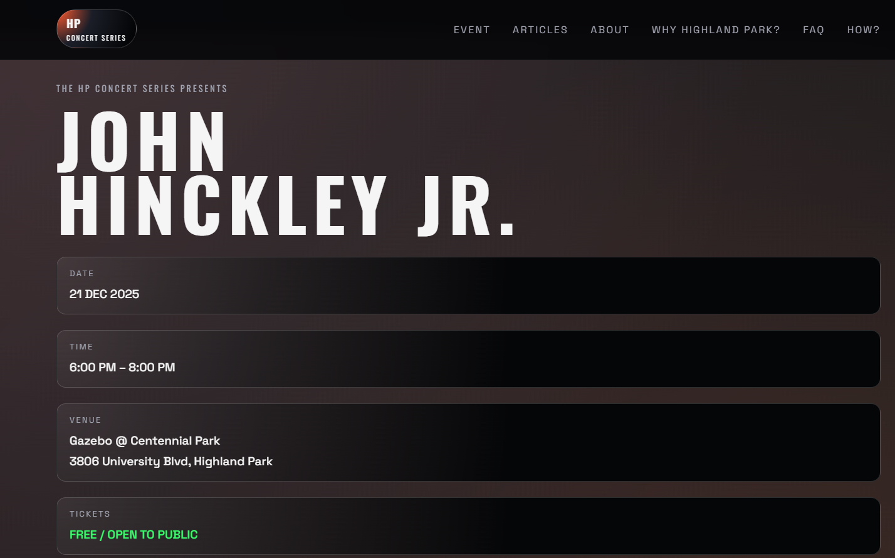
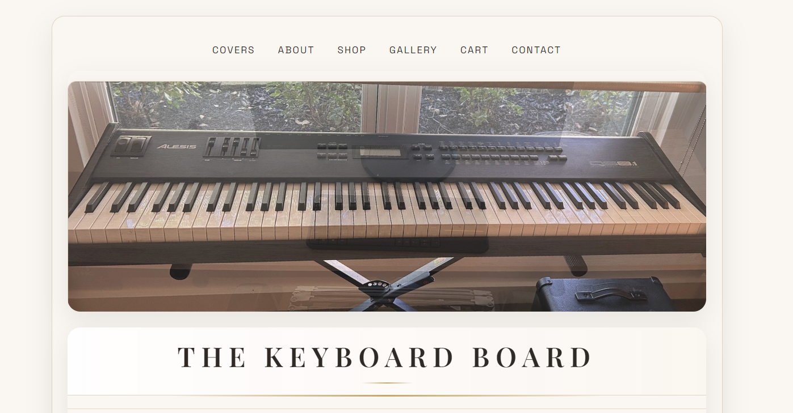

This section showcases coded web projects built with HTML, CSS, and responsive layout techniques. Each project highlights my approach to UX, layout, hierarchy, interaction, and overall user experience, with links to live sites and brief context on the design decisions behind them.
Vist South Padre Island

This project reimagines a South Padre Island visitor site with a retro-inspired brand system and an approachable layout. The goal was to create a simple, friendly interface that helps users quickly find events, dining, and things to do. The design emphasizes accessible navigation, clear calls to action, and a layout that feels energetic without overwhelming the viewer.
HP Concert Series

This site blends satire, UX storytelling, and visual identity design. It functions as a fully built campaign site for a fictional neighborhood concert series, complete with posters, social media, and embedded community reactions. The project examines how small design choices, language, and presentation shape public belief, and how digital artifacts can escalate or diffuse tension in tight-knit communities.
The Keyboard Board (not finished)

This in-progress site explores a clean, editorial style that highlights craftsmanship. The goal is to create a simple shopping experience with a calm aesthetic. The design focuses on typography, grid structure, and subtle interactions that support the brand's identity without distracting from the product.